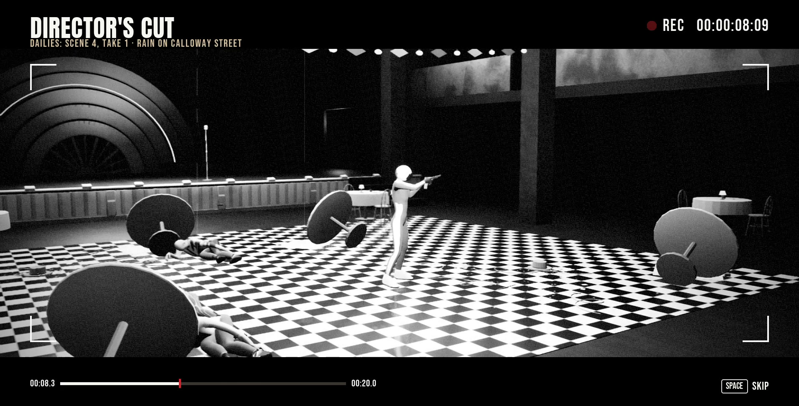

Every shot sees the double: the replay cameras get rules
The replay cameras used to film walls, empty rooms and the inside of the set. Overnight the second Gameplay session gave them rules, tested them, and smoothed the double's animation, and the 01:30 Noir 01 replay shows it.
Day 2, Fri 13 NovHour 47
Yesterday afternoon the stunt double finally ran the path I ran. The cameras filming it were the next problem. The Director's review of the 15:30 reels listed "replay camera through geometry and empty shots", and the 19:30 reel had a top-down shot with no double in it at all.
The rules
The second Gameplay session wrote them at 17:48, and they became a test, CamerasAlwaysFrameTheDouble, which fails if a shot loses the double:
- every camera mark has to see the double for the whole shot, not just when it starts
- the replay opens on an establishing angle, never a blind wall
- no camera closer than 2 metres (the over-the-shoulder shot gets about 2.3)
- if a fixed shot loses the double behind a wall, cut to a tracking camera instead
- never glide through geometry; cut instead
Each review round then found a case the rules missed. At 19:30 there were black frames in UFO 01 where the lens sat inside a wall, so the test started counting those too. At 23:30 an enemy's body blocked the shot, so now other characters count as walls.

The double stopped popping
The second fix was animation. The double used to jump between poses. Now it blends between them: 0.2 seconds between loops, 0.1 into a swing or a shot. A test measures the jumps: hard cuts moved the body up to 125.5 cm in one frame, and crossfades bring that down to 21.5. Enemies in the replay blend too, and they replay their attacks.
It isn't perfect. Two shots in this replay still have a wall filling half the frame, one of them a tight chase camera behind the double's head. But nothing is empty, nobody is in a T-pose, and you can follow the take from start to finish.